Unidad 1.1
dgonzalez
Gráficos básicos
La visualización de datos es una de las partes más importantes del análisis de datos, que permite de manera gráfica representar la información con el fin de poder resumirlos e interpretarlos.
Ya sea que estemos parados desde el lado de los lectores de informes o de los diferentes medios de cumunicación, los gráficos nos permiten entender mejor la realidad que los rodea.
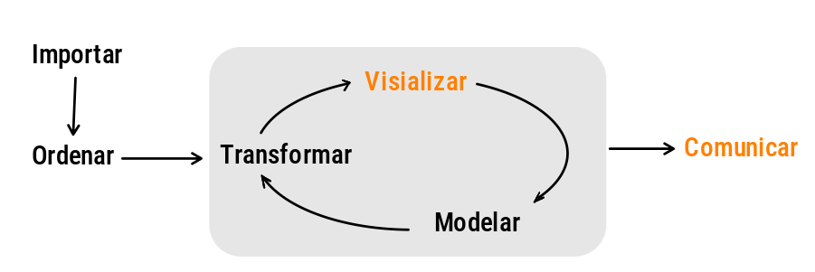
Los gráficos constituyen una forma eficiente de mostrar los resultados obtenidos en una investigación, pero tambien nos permiten revisar la información contendida en una base de datos y darnos una primera imporesión sobre los resultados obtenidos.
Algunas consideraciones
Empezaremos determinando el gráfico apropiado dependiendo del tipo de escala que tenga la variable a representar
| Tipo de variable | Tipos de escala | Tipo de gráfico | Sintaxis R |
|---|---|---|---|
| Cualitativa | Nominal | diagrama de torta | pie(table(x)) |
| Ordinal | diagrama de barras | barplot(table(x)) | |
| diag.barras dobles | barplot(table(x,y)) | ||
| diag. mosaico | plot(x,y) | ||
| Cuantitativa | De intervalo | diagrama de tallos y hojas | stem(x) |
| histograma | hist(x) | ||
| De razón | diagrama de puntos | plot(x,y) | |
| diagrama de densidad | density(x) | ||
| diagrama de cajas | boxplot(x) | ||
| diagrama de linea | plot(x, type=“l”) | ||
Nota: Además de estas formas de representación gráfica existen otras formas que combinan variables como:
- Mapas
- Diagrama de mosaico
- Diagramas de radar
- diagramas likert
- diagramas de piramide
- diagramas animados
Variable cualitativa-nominal
Recordemos que una variable cualitativa (@) corresponde a una variables cuyos posibles valores que toma son palabras. En el caso de la escala nominal, indica que los valores solo se pueden comparar \(=\) o \(\neq\) .
Ejemplo
- Tipo de homicidio : femenicidio, homicidio culposo, homicidio doloso ….
- Causa de muerte: suicidio, accidente, ……
- Tipo de arma utilizada: arma de fuego, arma blanca, objeto contundente, ….
- Condición legal del cadáver: no identificado, desaparecido,….
- Tipo de droga encontrada en el cuerpo: cocaína, heroína, cannabis,…
Para este tipo y escala de medición se recomiendan el diagrama circular, tambien llamados diagrama de torta, evitando los diagramas en 3D.
Diagrama circular
pie(x, # Vector numérico de valores para las porciones del pastel labels = , # Vector de etiquetas para las porciones del pastel edges = 200, # Número de lados para aproximar un círculo radius = 0.8, # Radio del pastel clockwise = FALSE, # Indica si las porciones del pastel se dibujan en sentido horario o antihorario init.angle = if(clockwise) 90 else 0, # Ángulo inicial para la primera porción del pastel density = NULL, # Densidad de líneas para rellenar las porciones del pastel angle = 45, # Ángulo de inclinación para las etiquetas col = NULL, # Colores de las porciones del pastel border = NULL, # Color del borde de las porciones del pastel lty = NULL, # Tipo de línea del borde de las porciones del pastel main = NULL, # Título principal del gráfico ... ) # Argumentos adicionales para la función pie
homicidios = c(3456, 10080, 8064)
names(homicidios) = c("Feminicidio","Homicidio culposo","Homicidio doloso")
# Ejemplo de datos
x <- c(10, 20, 30, 40)
nombres <- c("A", "B", "C", "D")
pie(homicidios)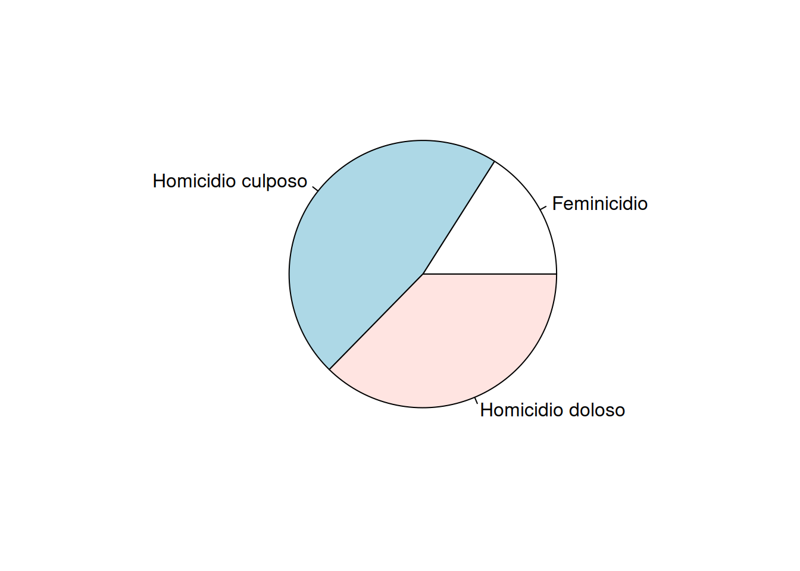
Fuente : crimen_mx.csv
labs <- names(homicidios)
pct=round(homicidios/sum(homicidios)*100)
labs=paste(labs, pct);labs=paste(labs, "%", sep = " ")
t1 = homicidios
pie(t1,
labels=labs,
main=" Tipo de homicidio",
col=c("#023047", "#f4d35e", "#ee964b"))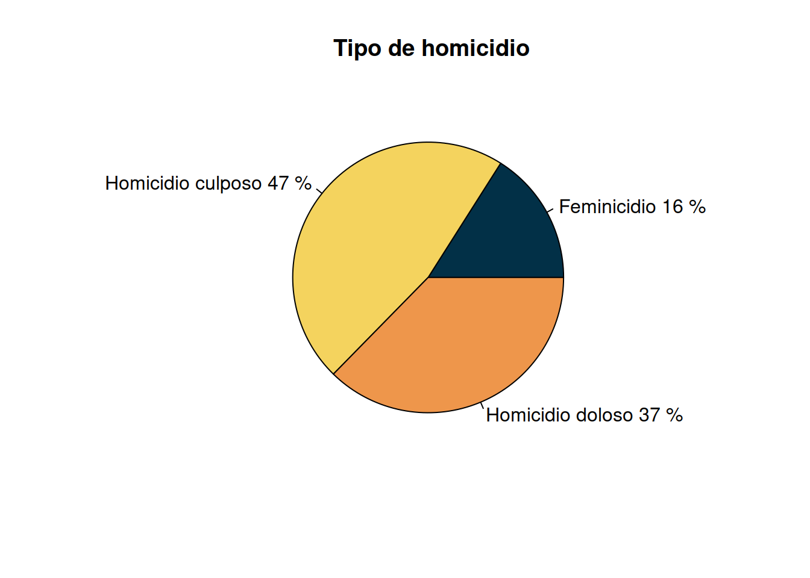
Variable cualitativa-ordinal
Para las variables cualitativas de escala ordinal (sus valores son palabras, pero se pueden ordenar)
Ejemplo
- Grado de lesión: leve, moderado o grave.
- Grado de intoxicación:leve, moderado o grave.
- Grado de quemadura: primer grado, segundo grado o tercer grado.
- Estado mental: consciente, confuso o inconsciente.
- Grado de violencia: leve, moderado o grave.
Gráfico de barras
# Crear un gráfico de barras barplot(x, # tabla de datos names.arg = nombres, # Etiquetas para los datos beside = TRUE, # Si es TRUE, las barras se apilan una al lado de la otra horiz = FALSE, # Si es TRUE, las barras se dibujan horizontalmente density = NULL, # Densidad de las líneas de relleno de las barras angle = 45, # Ángulo de inclinación de las etiquetas col = NULL, # Colores de las barras border = NULL, # Color del borde de las barras main = NULL, # Título principal del gráfico xlab = NULL, # Etiqueta del eje x ylab = NULL, # Etiqueta del eje y xlim = NULL, # Límites del eje x ylim = NULL, # Límites del eje y axes = TRUE, # Si es TRUE, se dibujan los ejes axisnames = TRUE, # Si es TRUE, se dibujan los nombres de los ejes cex.axis = 1, # Tamaño de la fuente de los nombres de los ejes las = 1, # Orientación de los nombres de los ejes (1 = horizontal, 2 = perpendicular, 3 = vertical) ...)
# Generar datos aleatorios para un mayor número de pacientes
set.seed(123) # Establecer una semilla para la reproducibilidad
num_pacientes <- 65
quemadura <-c("1º", "2º", "1º", "3º", "3º", "1º", "1º", "3º", "2º", "1º", "4º", "1º", "2º",
"2º", "1º", "3º", "1º", "1º", "1º", "4º", "3º", "2º", "2º", "4º", "2º", "2º",
"1º", "2º", "1º", "1º", "4º", "3º", "2º", "2º", "1º", "1º", "2º", "1º", "1º",
"1º", "1º", "1º", "1º", "1º", "1º", "1º", "1º", "1º", "1º", "3º", "1º", "1º",
"2º", "1º", "2º", "1º", "1º", "2º", "3º", "1º", "2º", "1º", "1º", "1º", "2º")
datos <- data.frame(Paciente = 1:65, Grado = quemadura)
tabla2 <- table(quemadura)
# Ejemplo de datos
altura <- c(10, 20, 30, 40)
nombres <- c("A", "B", "C", "D")tabla4 <- c(36,17,8,4)
names(tabla4) <- c("1º", "2º", "3º", "4º")
barplot(tabla4, col=c("#FAf0CA", "#F4D35E", "#EE964B", "#F95738"),
main = "Tipos de quemaduras 2023",
las=1 )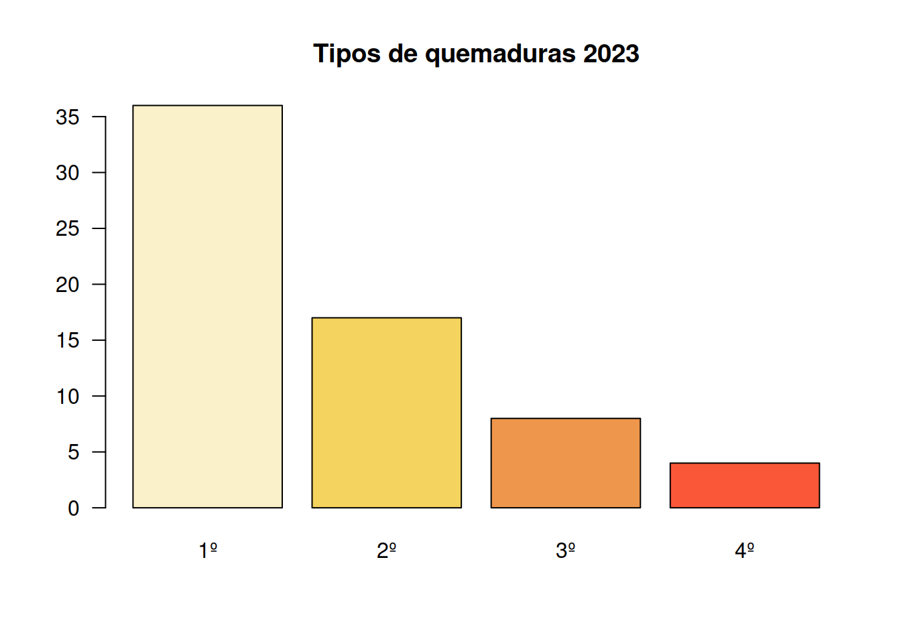 Fuente : información simulada
tabla4 <- c(36, 17, 8, 4)
names(tabla4) <- c("1º", "2º", "3º", "4º")
# Crear el gráfico de barras
barplot(tabla4, col = c("#FAf0CA", "#F4D35E", "#EE964B", "#F95738"),
main = "Tipos de quemaduras 2023",
ylim = c(0, 40) , # Ajustar el límite del eje y para que quepan los valores
las = 1,
ylab = "frecuencia",
xlab = " grado de la quemadura" )
# Agregar los valores en cada barra
text(x = 1:4, y = tabla4, label = tabla4, pos = 1, cex = 1, col = "black")
Gráfico de barras
Es posible que se desee representar dos variables cualitativas al tiempo, por ejemplo
namedadR <- c("menos de 1", " 1 - 5", " 6 - 11", "12 - 17", "18 - 28")
edadR <- c(22, 455, 701, 804, 472)
names(edadR) <- namedadR
barplot(edadR, las = 1, ylim = c(0, 900),
main = "Violencia sexual por rango de edad - 2021",
xlab = "edad - años",
ylab = "frecuencia")
grid()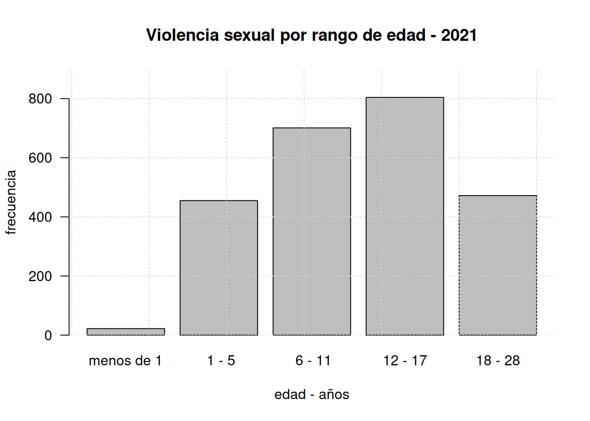
namedadR <- c("menos de 1", " 1 - 5", " 6 - 11", "12 - 17", "18 - 28")
edadR <- c(22, 455, 701, 804, 472)
names(edadR) <- namedadR
barplot(edadR, las = 1, ylim = c(0, 900),
main = "Violencia sexual por rango de edad - 2021",
xlab = "edad - años",
ylab = "frecuencia",
col = "#FF8C00" , density = 45)
grid()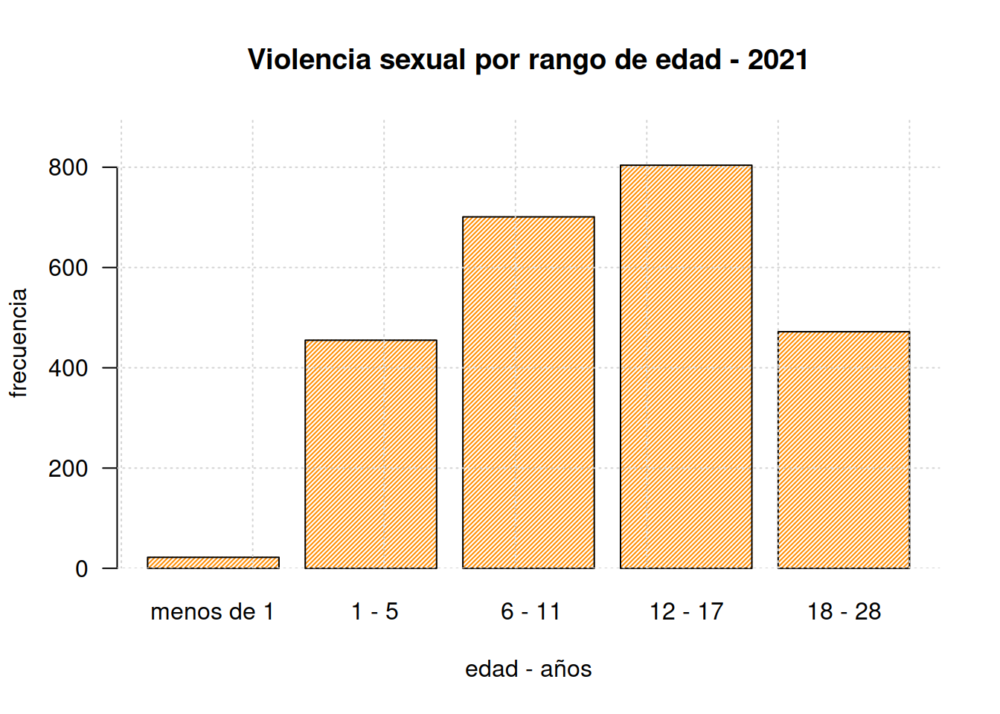
Ahora quiero visualizar por lugar de residencia - urbano rural
Diagrama de barras bivariado
data1 <- data.frame(quemadura <-c("1º", "2º", "1º", "3º", "3º", "1º", "1º", "3º", "2º", "1º", "4º", "1º", "2º",
"2º", "1º", "3º", "1º", "1º", "1º", "4º", "3º", "2º", "2º", "4º", "2º", "2º",
"1º", "2º", "1º", "1º", "4º", "3º", "2º", "2º", "1º", "1º", "2º", "1º", "1º",
"1º", "1º", "1º", "1º", "1º", "1º", "1º", "1º", "1º", "1º", "3º", "1º", "1º",
"2º", "1º", "2º", "1º", "1º", "2º", "3º", "1º", "2º", "1º", "1º", "1º", "2º"),
sexo = rbinom(65,1,0.4) )
tabla5 <- table(data1$sexo, data1$quemadura)
barplot(tabla5)
tabla6 <- table(data1$quemadura, data1$sexo)
barplot(tabla6)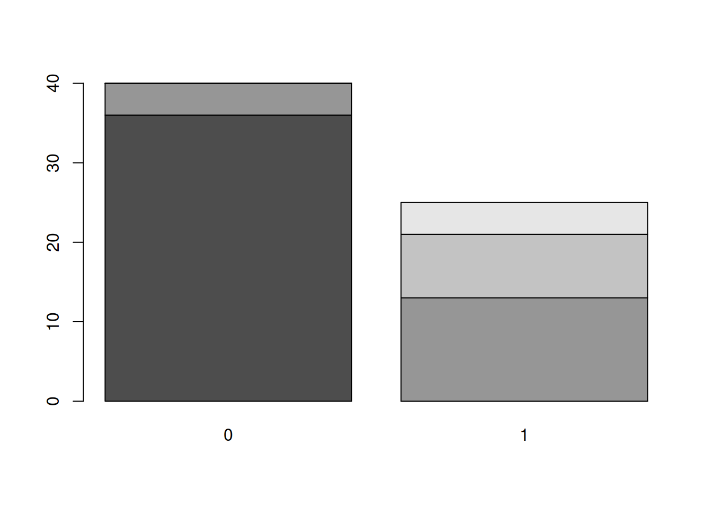
colnames(tabla6) = c("Mujer", "Hombre")
barplot(tabla6,
las = 1,
beside = TRUE,
legend.text = c("1º", "2º", "3º","4º"),
xlab = "sexo",
args.legend = list(x = "topright", title = "grado quemadura"))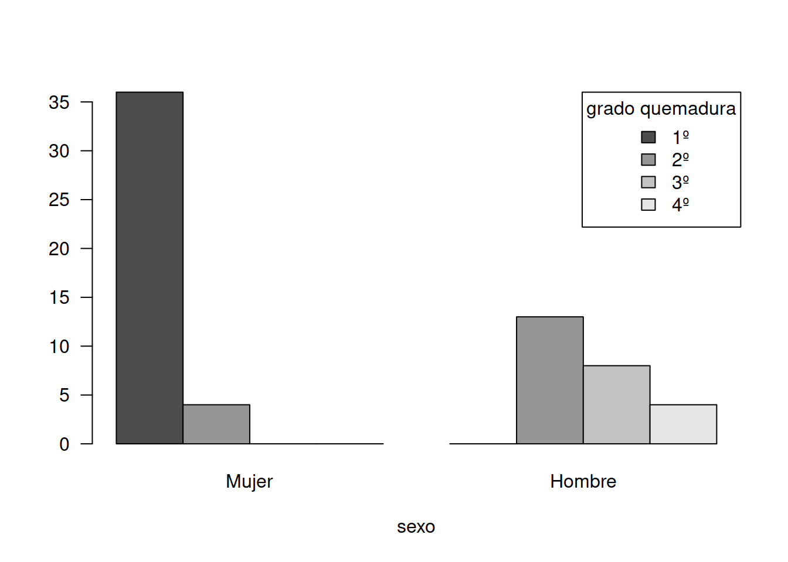
# Crear una paleta de colores degradada de rojos
red_palette <- colorRampPalette(c("#FFC685", "#AE123A"))(4)
barplot(tabla6,
las = 1,
main = "Tipo por sexo",
beside = TRUE,
legend.text = c("1º", "2º", "3º","4º"),
xlab = "sexo",
args.legend = list(x = "topright", title = "grado quemadura"),
col = red_palette)
4. Diagrama de mosaico
mosaicplot(~sexo + quemadura,
data =data1,
main = " Tipo quemadura por sexo",
col=red_palette,
las = 1,
ylab = "Tipo",
xlab= "Sexo",
cex.axis = 1) 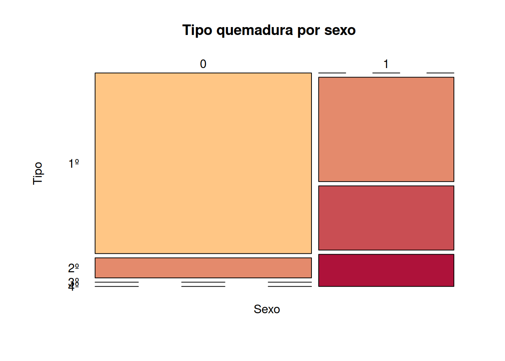
Variables cuantitativas
Diagrama de tallos y hojas
# Diagrama de tallos y hojas
stem(data2$edad)
The decimal point is at the |
2 | 000000000
3 | 00000000
4 | 0000000000000000
5 | 000000000
6 | 0000
7 | 00000000
8 | 0000000
9 | 00000000000000000000000000000
10 | 00000000000000000000000
11 | 0000000000
12 | 0000000000000000000000000000000
13 | 0000000000000000000000000000000000000000000000000000000000
14 | 00000000000000000000000
15 | 06. Histograma
hist(data2$edad)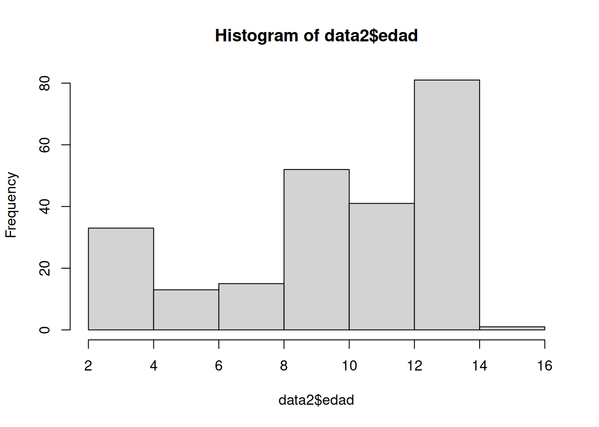
h1=hist(data2$edad,
breaks = 5,
main = "Edad",
xlab = "años",
ylab="frecuencias",
labels=TRUE,
col="#ABBCC9",
ylim = c(0,100),
las =1)
grid()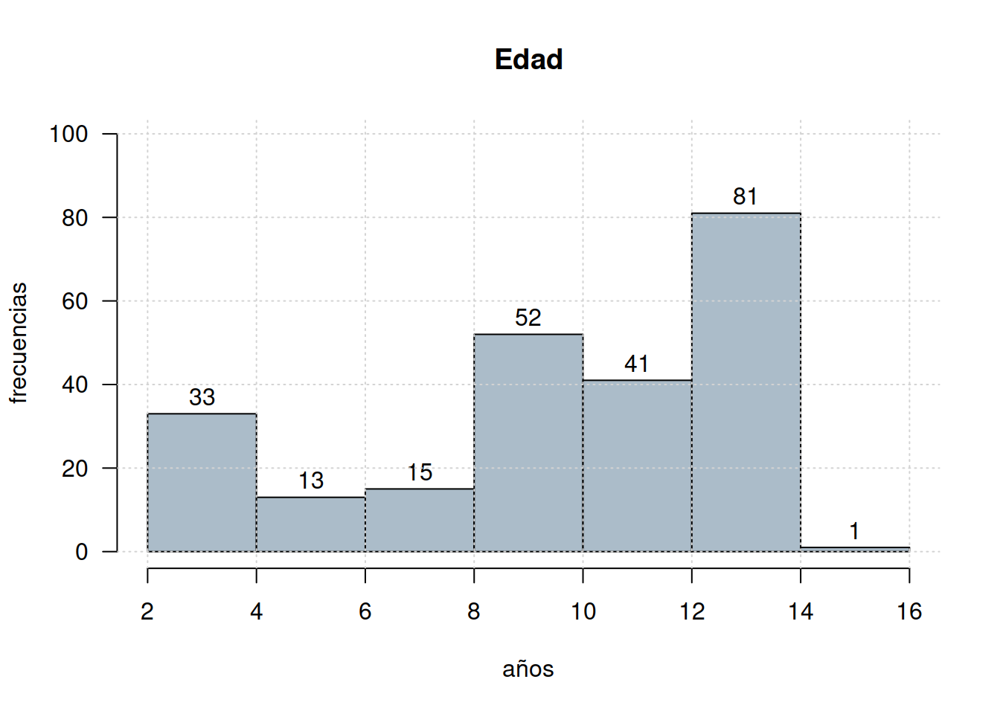
7. Diagrama de densidad
plot(density(data2$edad, na.rm = TRUE))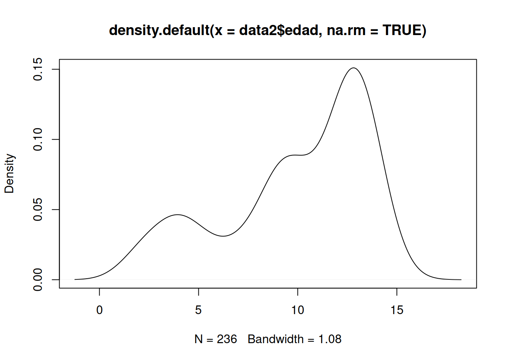
plot(density(data2$edad, na.rm = TRUE),
main="Distribución edad",
col="#0d3b66",
lwd=2,
las=1,
xlab = "Nota",
ylab = "Densidad")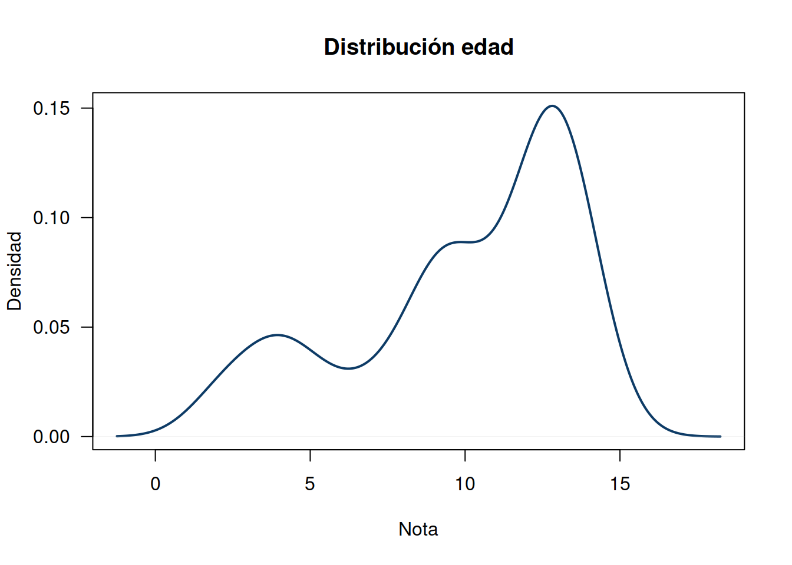
8. Diagrama de cajas
# Ejemplo de datos
altura <- c(10, 20, 30, 40)
grupo <- c("A", "B", "A", "B")
# Crear un gráfico de diagrama de caja
boxplot(x, # Datos numéricos a visualizar
data = NULL, # Un data frame (opcional) del cual extraer los datos
horizontal = FALSE, # Si es TRUE, los diagramas de caja se dibujan horizontalmente
add = FALSE, # Si es TRUE, añade el diagrama al gráfico actual
at = NULL, # Posiciones en las que dibujar los diagramas de caja
coef = 1.5, # Coeficiente para determinar los valores atípicos
boxwex = 0.8, # Ancho relativo de las cajas
staplewex = 0.5, # Ancho relativo de las líneas que conectan las cajas y los bigotes
range = 1.5, # Factor multiplicativo para calcular el rango de los bigotes
outline = TRUE, # Si es TRUE, se dibujan los puntos atípicos fuera de los bigotes
border = par("fg"), # Color del borde de las cajas
col = NULL, # Colores de las cajas
log = "", # Especifica si se deben hacer transformaciones logarítmicas
ylab = "Valores", # Etiqueta del eje y
xlab = "Grupos", # Etiqueta del eje x
notch = FALSE, # Si es TRUE, se dibujan muescas en las cajas
outlinecolors = par("fg"), # Color de los puntos atípicos
# Parámetros relacionados con la leyenda
names = NULL, # Nombres de los diagramas de caja
main = NULL, # Título principal del gráfico
sub = NULL, # Subtítulo del gráfico
cex = 1, # Tamaño de las etiquetas
font = NULL, # Fuente de las etiquetas
col.main = NULL, # Color del título principal
col.sub = NULL, # Color del subtítulo
col.lab = NULL, # Color de las etiquetas de los ejes
cex.main = 1, # Tamaño del título principal
cex.sub = 1, # Tamaño del subtítulo
cex.axis = 1, # Tamaño de las etiquetas de los ejes
mgp = NULL, # Posición de las etiquetas de los ejes
font.axis = NULL, # Fuente de las etiquetas de los ejes
col.axis = NULL, # Color de las etiquetas de los ejes
...)
boxplot(data2$edad)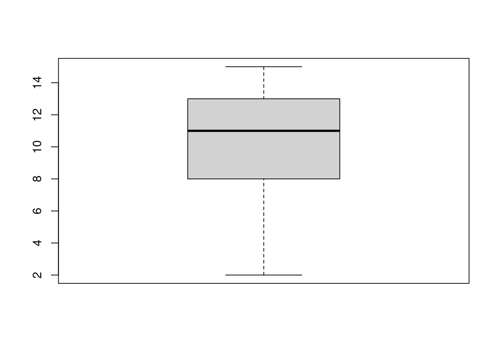
boxplot(data2$edad, main="Edad",
col="#f4d35e",
las=1)
abline(h=6, col="#f95738", lwd=3)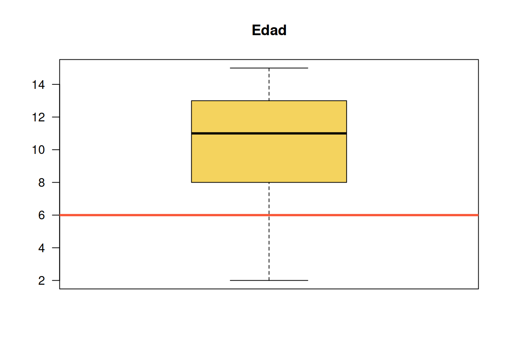
boxplot(data2$edad, main="Edad",
col="#f4d35e",
las=1,
horizontal = TRUE)
abline(v=6, col="#f95738", lwd=3)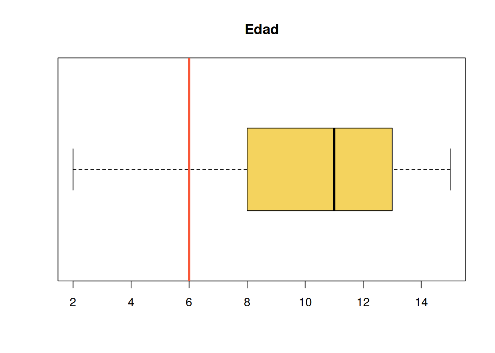
9. Comparación diagrama de cajas
boxplot(data2$edad ~ data2$sexo,
main="Edad por sexo",
col=c("#34b5aa","#ecbe14"),
xlab = "Grupo", ylab = "años")
abline(h=4, col="#447270", lwd=2)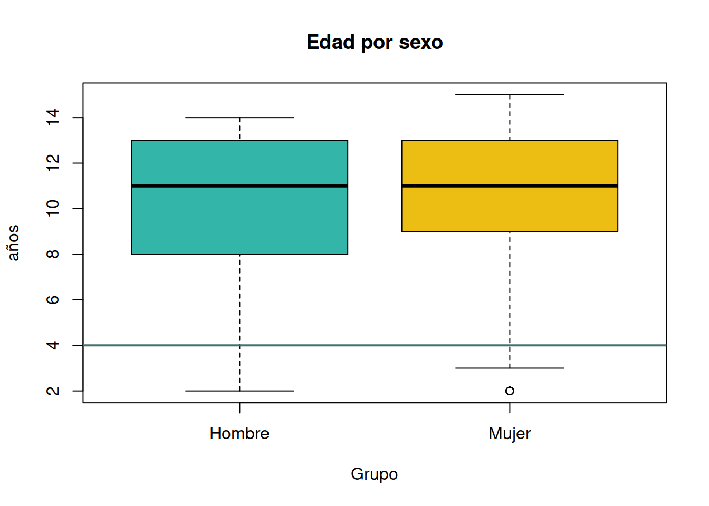
10. Gráfico de series de tiempo
t=1:300 ; x=w=rnorm(300,0,1); x<-w; for(t in 2:300) x[t]<-x[t-1]+w[t]
plot(x, type="l",
main="Número de pasajeros",
col="#ee964b",
lwd = 2)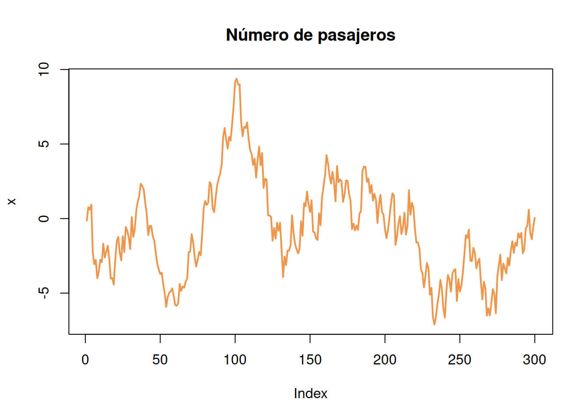
11. Resumen
x=rnorm(100,100,20)
y=rnorm(100,100,25)
z=rbinom(100,4,0.30)
t=1:100
pie(table(z))
barplot(table(z))
stem(x)
hist(x)
boxplot(x)
plot(x,y)
plot(t,y, type="l")
plot(density(x))Paquetes adicionales
Hasta el momento se ha utilizado R base para la elaboración de gráficos, a continuación se presentan algunos paquetes que mejoran la construcción de gráficos y su visualización :
ggplot2.

Este paquete de R permite la construcción de gráficos utilizando para ello una “grámatica” de los grafocos, la cual incorpora componentes como : los datos (data), un conjunto de coordenadas ( ), una serie de geometrias (geoms)
Componentes de un gráfico en ggplot2:
Data: capa de los datos
Aesthetics: capa estetica (aes), definimos las variables a utilizar en el gráfico
Geometries: capa de geometrias, se define el tipo de gráfica a realizar
Facets: capa de facetas, permite detallar la gráfica por categorias
Statistics: capa de estadística, permite agregar modelos
*Coordinates: capa de coordenadas, permite ajustar las escalas de los ejes
Theme: capas de características del gráfico que no dependen de los datos
Para empezar, inicialmente se instalar el paquete
install.packages("ggplo2")Y luego habilitarlo para su uso
library(ggplot2)Se empieza con el primero de los lienzo, donde se declara la data que vamos a utilizar

library(ggplot2)
fig=ggplot(data=data2)
fig
Como segundo paso se definen las variables que se van a utilizar en la construcción del gráfico
library(ggplot2)
fig=ggplot(data=data2, aes(x=edad , y=sexo))
fig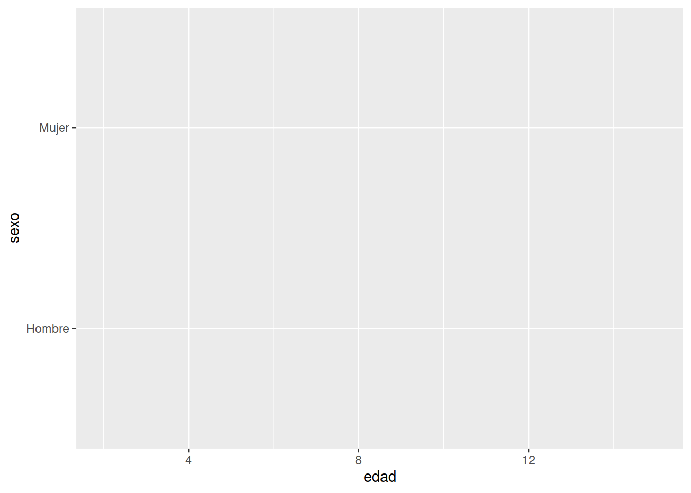
Luego de tener definida la base y las variables a utilizar se indica la geometria a utilizar, en este caso se trata de puntos

library(ggplot2)
fig=ggplot(data=data2, aes(x=edad , y=sexo)) +
geom_boxplot()
fig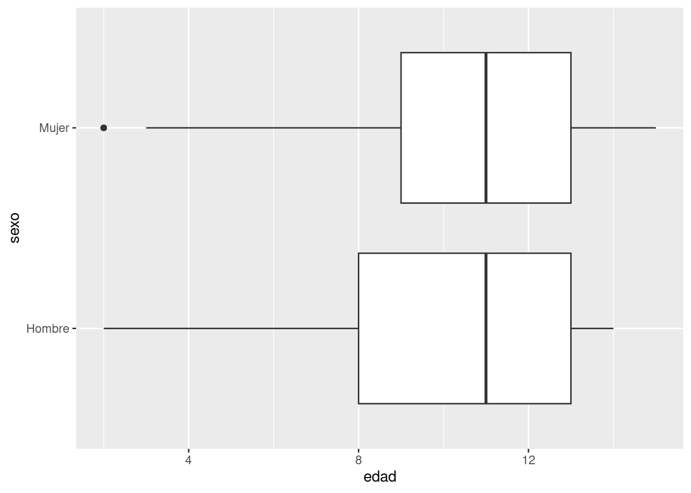
Otros elementos a utilizar son :
facet que nos ayuda a visualizar el gráfico por factor, construyendo la gráfica para cada mes en este caso

library(ggplot2)
fig=ggplot(data=data2, aes(x=edad , y=sexo)) +
geom_boxplot() +
facet_wrap(~ tipo)
fig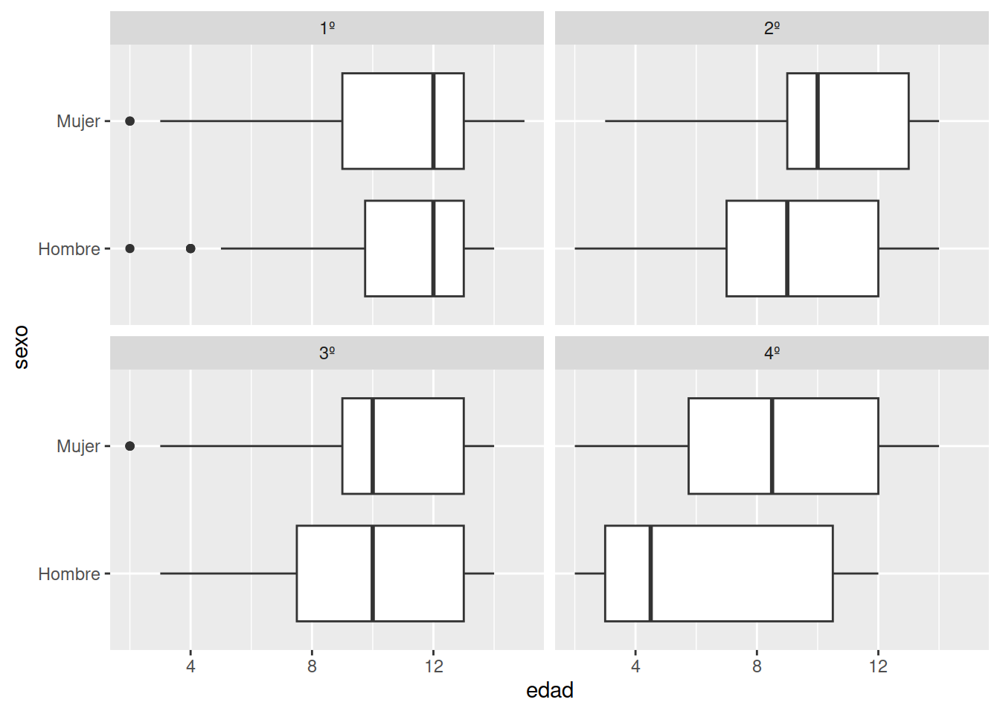
stat permite realizar modelos lineales y mostrar asi la relación existente entre las variables

library(ggplot2)
fig=ggplot(data=data2, aes(x=edad , y=sexo)) +
geom_boxplot() +
facet_wrap(~ tipo) +
coord_flip()
fig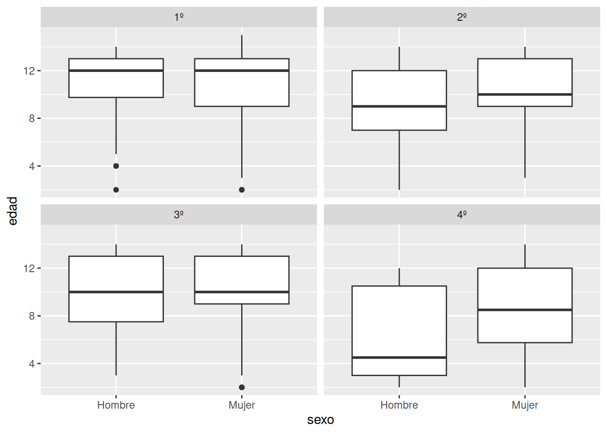
coordinates la cual permite ajustar los ejes , por ejemplo podemos determian el rango de que queremos presentar en la gráfica
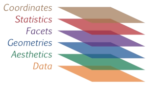
library(ggplot2)
fig=ggplot(data=data2, aes(x=edad , y=sexo)) +
geom_boxplot() +
facet_wrap(~ tipo) +
coord_flip() +
scale_y_discrete(name = "Sexo") +
scale_x_continuous(name = "Edad", breaks = seq(0, 20, by = 2))
fig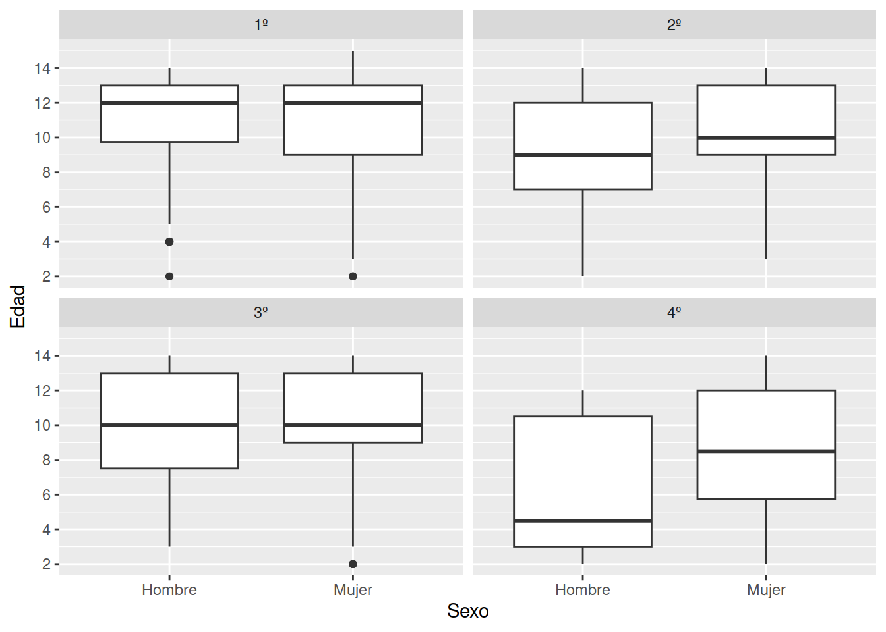
themes finalmente la capa del tema o fondo de la gráfica

library(ggplot2)
fig=ggplot(data=data2, aes(x=edad , y=sexo, fill = tipo)) +
geom_boxplot() +
scale_fill_manual(values = red_palette)+
facet_wrap(~ tipo) +
coord_flip() +
scale_y_discrete(name = "Sexo") +
scale_x_continuous(name = "Edad", breaks = seq(0, 20, by = 5)) +
theme()
fig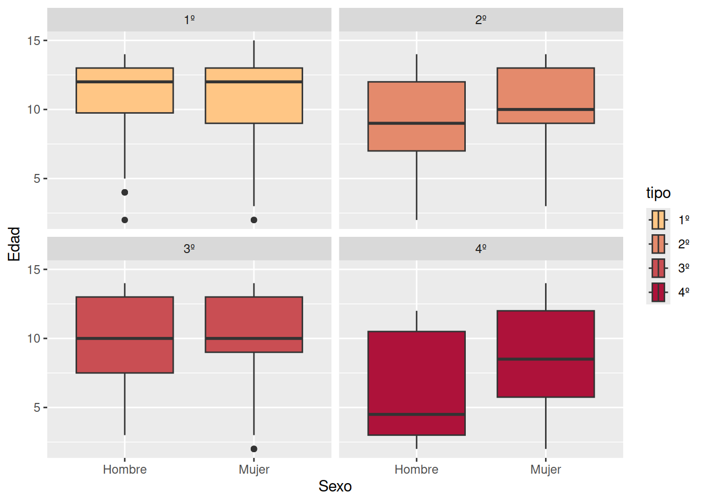
highcharter
require(sp)Loading required package: sp require(rgdal)Loading required package: rgdalWarning in library(package, lib.loc = lib.loc, character.only = TRUE,
logical.return = TRUE, : there is no package called 'rgdal' require(raster)Loading required package: raster require(RColorBrewer)Loading required package: RColorBrewerlibrary(tidyverse)── Attaching core tidyverse packages ──────────────────────── tidyverse 2.0.0 ──
✔ dplyr 1.1.4 ✔ readr 2.1.5
✔ forcats 1.0.0 ✔ stringr 1.5.1
✔ lubridate 1.9.3 ✔ tibble 3.2.1
✔ purrr 1.0.2 ✔ tidyr 1.3.1── Conflicts ────────────────────────────────────────── tidyverse_conflicts() ──
✖ tidyr::extract() masks raster::extract()
✖ dplyr::filter() masks stats::filter()
✖ dplyr::lag() masks stats::lag()
✖ dplyr::select() masks raster::select()
ℹ Use the conflicted package (<http://conflicted.r-lib.org/>) to force all conflicts to become errors mi.palette <- brewer.pal(n = 7, name = "OrRd") # paleta de colores
mapco=shapefile("/home/deg/Documentos/JAVERIANA/EDUCON/repository/cursoML/presenta1/map/colombia/depto.shp") # importa mapa en formato .shp
# colombia=readRDS("data/Colombia.RDS")
# colombia$departamento_nom= str_to_upper(colombia$departamento_nom)
# t=table(colombia$departamento_nom,colombia$estado)
fallecidos=c(15174,3876,26516,807,2417,2151,880,1333,2388,3487,6495,382,2880,
1296,1380,2076,2861,3961,1635,2119,6934,1546,3411,11929,400,844,
620,249,29,87,17,45,133) # vector con información
mapco@data$fallecidos=fallecidos # se adiciona variable con 33 valores = 33 dptos, en mismo orden
spplot(mapco[,6], col.regions = mi.palette, cuts = 6) # mapa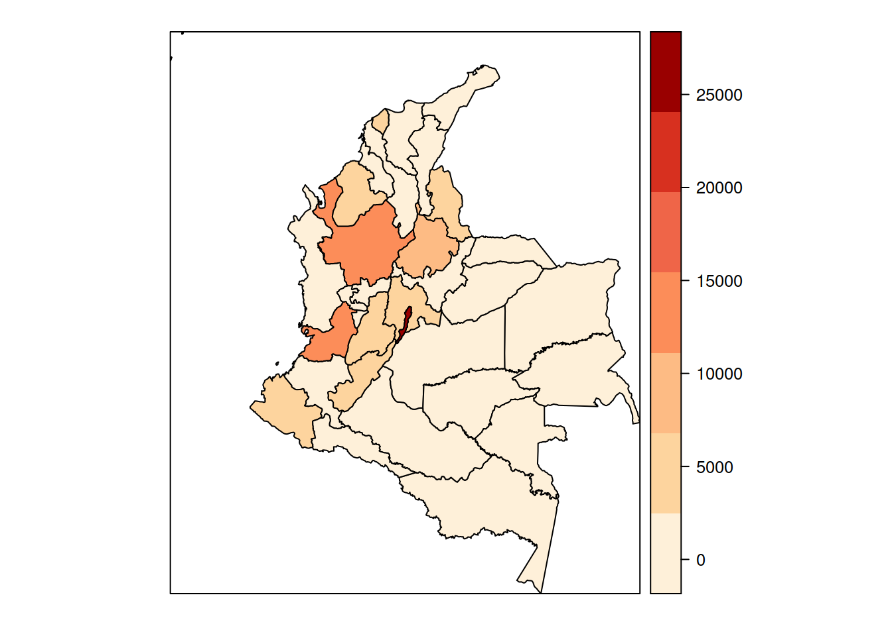
Margenes de los gráficos
# Grafico normal
x=rnorm(100,100,20)
plot(density(x))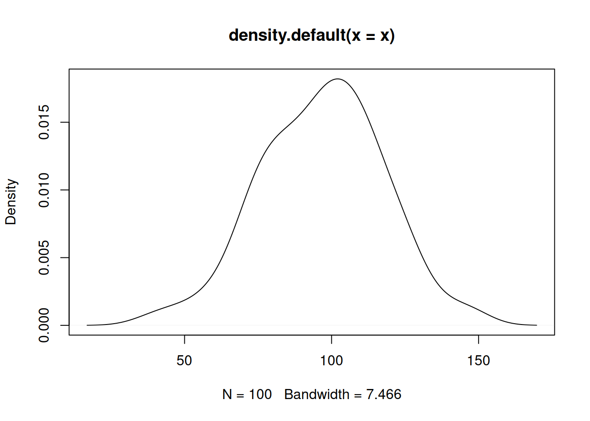
margenes de la grafica c(bottom, left, top, right)
par(mar = c(5, 4, 4, 2) + 0.1)
x=rnorm(100,100,20)
plot(density(x))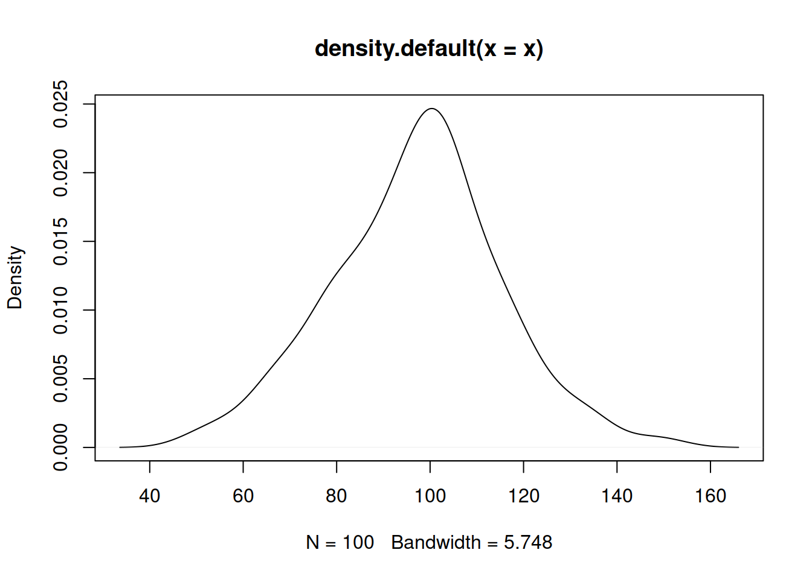
margenes de la gráfica
par(mai = c(1.5, 1.5, 1.5, 1.5))
x=rnorm(100,100,20)
plot(density(x))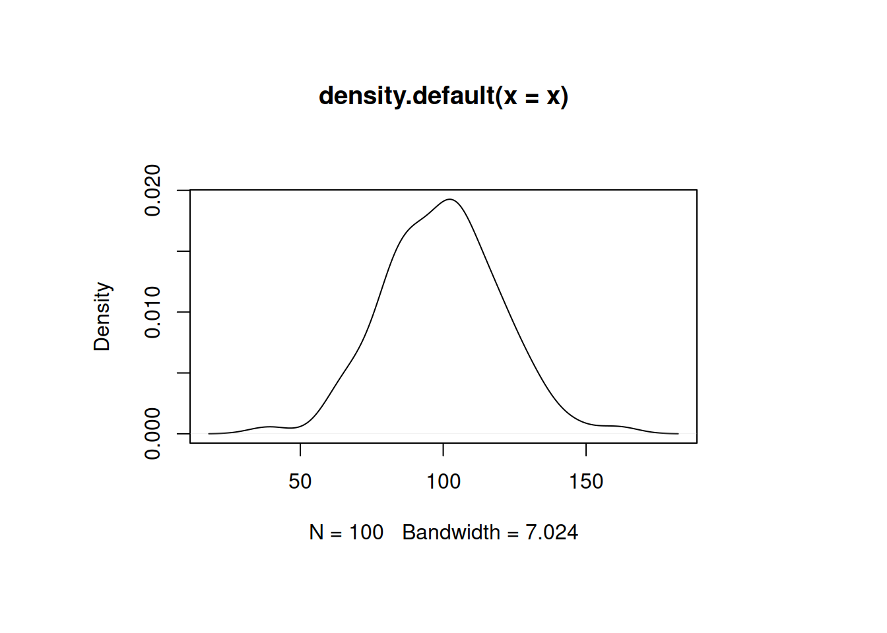
### Matriz de gráficos mfrow = c(2, 2)
x=rnorm(100,100,20)
y=rnorm(100,100,25)
z=rbinom(100,4,0.30)
t=1:100
par(mfrow = c(2, 2) ) # definición de la matriz
plot(density(x))
barplot(table(z))
hist(x)
plot(x,y)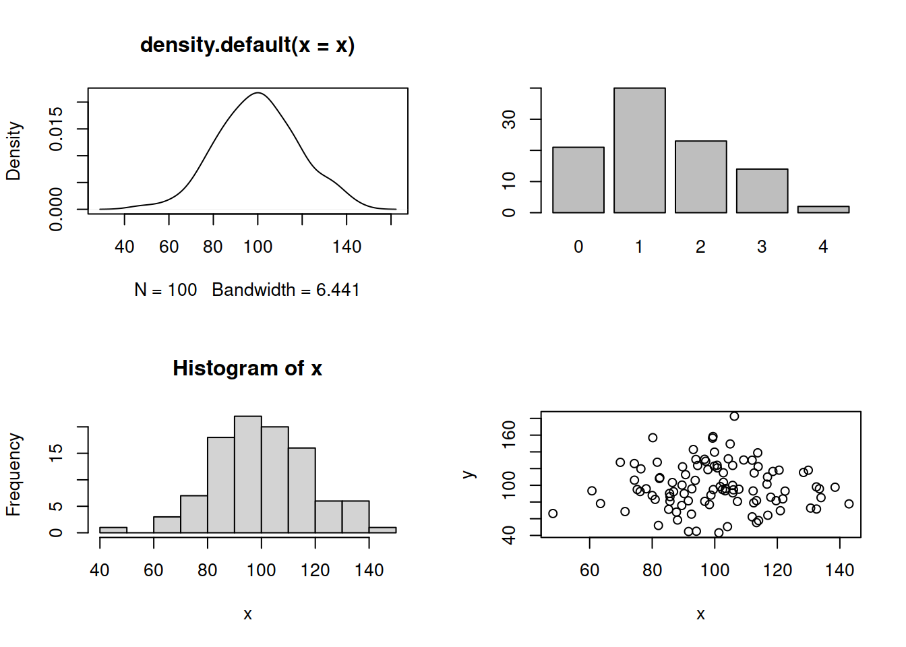
margenes exteriores c(bottom, left, top, right)
par(mfrow = c(2, 2), # matriz de graficos 2x2
oma = c(3, 5, 2, 4) ) # margenes de la imagen
plot(density(x))
barplot(table(z))
hist(x)
plot(x,y)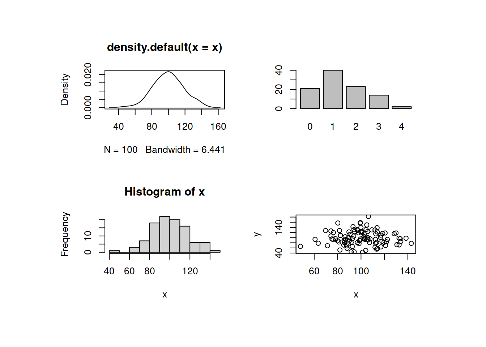
Tamaño texto
x=rnorm(100,100,20)
plot(density(x),cex.lab=.8, # tamaño de etiqueta ejes
cex.axis=2, # tamaño escalas de los ejes
cex.main=1.5, # tamaño del titulo
cex.sub=1) # tamaño del subtitulo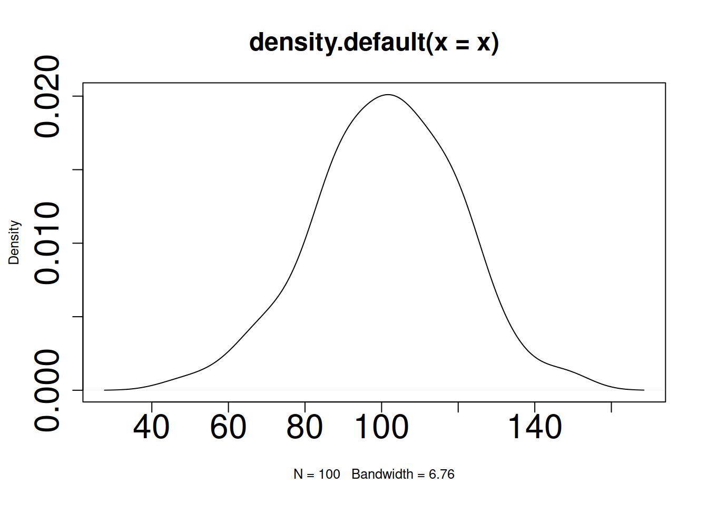